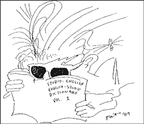

|

Lunch With The Fat Man #4
Practical advice for musicians and would-be musicians. But it's not just about the music. It's about life. It's about art. It's about lunch! Let's eat!
- - - - - - - - - -
by George Alistair Sanger
Installment index
"We Don't Really Carve Turkey"
Hi. Sit down. What are you having? Welcome to Lunch With the Fat Man.
When the producer says, "let's carve turkey," you would do best not to interpret his words literally. To "carve" is to lay down, or record, musical tracks. "Turkey" is an affectionately derisive term for a song, usually used late at night when even the most carefully crafted pieces of studio art will wear thin the armor of friendship and business relationships. At such times, a friendly jest can help avoid a friendly joust, and I wouldn't doubt that "Let's carve this turkey" was cheerfully chirped throughout the processes of recording even such greats as The Beatles’ Abbey Road, Karajan's Beethoven Symphonies with the New York Philharmonic, and the mighty "Winston Tastes Good."
The studio, like the beach, has a colorful language all its own, and if you can "stay cool," then you can sound like a "ho-daddy;" and keep your "toes on the nose," never to “wipe out." Nobody ever need know what a "gremlin" you really are.
For example:
Mic: Microphone.
Board: What you will become three hours into the session.
Cable: What you'll wish you were watching three hours into the session.
Engineer: Someone who can accept five dollars an hour for concentrating on one tune for 20 hours straight in a smoky, tiny, dark room with seven other people who think they can do what he's doing, then show up for work the next day, five hours later. God Bless the Engineers, and death to anyone who says otherwise.
Yachtsman: Someone who thinks he is getting exercise while out on his yacht. He can't make a decision in the studio, usually because he doesn't know what he wants. He just drifts and pays for studio time.
Torquer: Someone who knows exactly what he wants, despite the fact that it has no real basis. A torquer will turn the knobs all the way up, turn the bass knobs all the way down, and declare that it sounds much better, even if the knobs are inactive.
Cat or Monster: Someone who knows exactly what he wants and gets it quickly and well.
Fat: Big-time.
Producer: Who knows? Find two people who agree on what this means and let me know. Perhaps it's someone who does whatever it takes to make things sound better.
Pahdoocer: A person with a day job who wants to get into the music business as a producer, whatever that means. The Pahdoocer will often try to "make a record" of the duo that plays cover tunes at his favorite singles bar. In this case, "Make a record (of someone else)" means paying for tape and studio time, while occasionally annoying the group and the engineer with bad ideas.
 When the engineer shouts, "It should be up!", he is not announcing his frustrated virility. He is - well, actually, he is announcing his frustrated virility. It means he is having trouble tracing an elusive signal path, and therefore can't allow anyone to hear or record a bass guitar. Watch out when you hear this! It means he'll soon be blaming the bass player for everything from faulty cords to a knob turned to zero, until he finally remembers that the control room amp is off.
"Are your headphones comfortable?" may sound like tender words of compassion from your producer. "It's best that you not know that he really means, "What possible excuse could you have for singing that poorly?" "Would you like a drink?" is the same thing. But remember, though, comfortable phones and a shot of whiskey have saved many a session, so use these. But if someone says them to you, don't fight them. Take the drink.
Custom equipment: Anything that's been sent out for repairs and came back with the wrong part.
"Sounds good in here (said from the control room to the music room)" Musicians use this as often as producers and engineers. Often means, "It's time to go home now. Quit screwing up and start giving up." Again, it's probably good to pretend that you don't know what this actually means, and simply accept the suggestion that it may be time to stop frustrating yourself.
Acceptable and Effective: Godlike. An "acceptable" take contains an acceptable amount of magic and soul, and an “effective" take effectively moves your emotions. Accept no less.
Say, this was great. Let's have lunch more often.
 Next page | "Yo Jimbo! (The Hired Hand)" Next page | "Yo Jimbo! (The Hired Hand)"
1, 2, 3
|